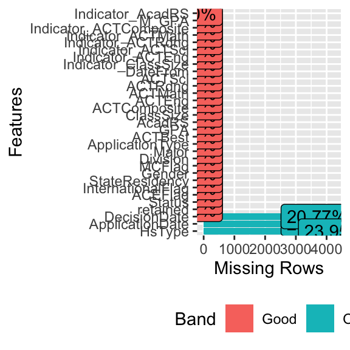
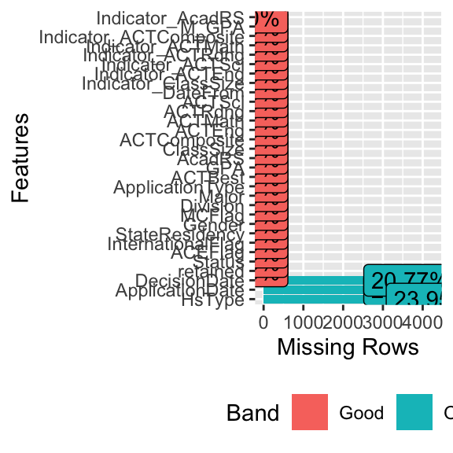

Background Context
In this project for a class, I was tasked by Dr. Scott Sportsman, the Director of Enrollment Research and Analysis, who had given us a task of assigning a likelihood of as student not to be retained based on only the application data of the student. The university definition of retention is that a student returned for their third semester. Thus the retention rate reported in US News and World Report is the percentage of students who start as typical freshman and returned for the first semester of their sophomore year. Note that “return” means that the student was enrolled in class on October 15 of that semester. If a student left Miami after that date in the semester then they would be counted as being “retained”. This will give Miami information as to which students to give extra attention to upon admittance.
Goal
To clean data for later processing into logistic regression, random and boosted tree models, and neural network models.
Creating New Dataset
Show Code
#-----------------------------------------------Creating New Dataset--------------------------------------------------------------
library(dplyr)
#Creating a new data set that only has the variables that are included in the 2018 year, ulimately testing our model on
#Below are the variables we used and, if they weren't working based on given names, we found names of variables that matched up:
#Left out SAT R ERW, SAT R Math
#Changed Class Percentile to RankPercentile because they seemed to be the same, just two different names
#High School Type Slate = HsType
#Could not find Parent 1 or 2 Education Level in the data set as a variable
#TOEFL could not be found in the data set along with TOEFL Total
#TOEFL Listening = TIBL, TOEFL Reading = TIBR, TOEFL Written Expression = TIBW, TOEFL Speaking = TIBS
#IELTS Overall = IELO, IELTS Listening = IELL... so on
#Assumed that VentureScholar was = SummerScholars
data <- select(data, retained, tag, HomeState, ZipCode, Zip5, NationDesc, CountyDesc, Status, ACEFlag, InternationalFlag, StateResidency, Gender, MCFlag, OneRace, FullRace, FirstGen, AlumniConnection, Division, Major, SuppMajor1, SuppMajor2, Concentration, ApplicationType, ApplicationDate,Housing, SpecialConsideration, DisciplinaryQuestion1, Decision, DecisionType, DecisionDate, ConfirmDate, ACTBest, GPA, AcadRS, GPAScale, GPAOrig, ClassRank, ClassSize, ACTComposite, ACTEng, ACTMath, ACTRdng, ACTSci, ACTWRSC, SATVerbal, SATMath, SATWRSC, ACTChoice, ACTMaxComposite, ACTMaxEnglish, ACTMaxMath, ACTMaxReading, ACTMaxSciReasoning, ACTWritingMax, RankPercent, HighSchoolCode, HighSchoolState, HsType, EER, DateFrom, Citizen, Citizenship, TIBL, TIBR, TIBW, TIBS, IELO, IELL, IELR, IELW, IELS, Bridges, VentureScholar, Race, Hispanic, AS_Race, AI_Race, BL_Race, HS_Race, PI_Race, MiamiRanks)
#----------------------------------------------Selecting Our Training Years------------------------------------------------------
data <- subset(data, DateFrom >= 2013) #Subsetting the data to include the years that we are interested in
#Helps when figuring out what variables to remove considering were only looking at the observations in years were interested in
variable_removal <- summary(as.factor(data$DateFrom))
Individually selected the variables that was wanted to include in the data frame. Some variables were left out, some were renamed. Also subsetted the data in order to only include the years that were of interest.
Addressing Response Variable
Recoding the response variable to ensure that it is in the preferred format.
Show Code
#--------------------------------------------------Response Variable Retained----------------------------------------------------------------
#Looking at our response variable, retained
# class(data$retained) #It is an integer, but we want it as a factor, so:
data$retained <- as.factor(data$retained)
# levels(data$retained)
# summary(data$retained)
data$retained <- recode_factor(data$retained, "0" = "Yes", "1" = "No")
# levels(data$retained)
# summary(data$retained) #The base is 0 (retained) and 1 is that they are not retained, 23 missing values that we remove:
# Delete the retained that are missing - You can't use rows that have the response missing
M_retained <- which(is.na(data$retained))
data <- data[-M_retained,]
Changed the base of retained variable to be 0 (Yes, the student is retained) and 1 (No, the student was not retained). Proceeded to remove the rows that have missing retained values.
Removing Variables
Need to remove variables that have too many missing values as well as removed variables that are redundant, not important or unclear.
Show Code
#----------------------------------------------------Removing Variable Work----------------------------------------------------------
##Finding out the variables that have over 38% missing data, then removing them
library(DataExplorer)
plot1 <- plot_missing(data)
data <- data[, colMeans(is.na(data)) <= .38]
data <- select(data, -c(Citizen, Race))
data <- select(data, -HighSchoolState) # Have other variables that account for this
data <- select(data, -OneRace) #Decide to remove OneRace because it has more missing observations than any single level inside of the variable
data <- select(data, -Concentration) # Keep major, delete concentration, they account for the same variable
data <- select(data, -Citizenship) # Already have the variable citizen, redundant variable
data <- select(data, -tag) #Removing Tag because we are not concerned with the ID of the student that dropped
data <- select(data, -Decision) #You cannot retain a student that is not admitted to the university, therefore it also has only one level that is AA = Admitted
data <- select(data, -HighSchoolCode) #Removing HighSchoolCode because we have so many other variables that account for where the person lives, the type of highschool, etc. It's redundant.
data$GPA[data$GPA >5] <- mean(data$GPA)# Delete observations where GPA is greater than 5 because that isn't possible
data <- select(data, -EER) #Decided to delete EER because the definition was very unclear and wouldn't be easy to comprehend in a model.
data <- select(data, -SuppMajor1, -SuppMajor2) #Aren't interested in what majors they selected on their application
data <- select(data, -FullRace) #Very unclear definition, if its in regards to race then the variable is redundant
data <- select(data, -GPAScale) #GPA is already accounted for on a scale of 4.0, redundant variable
data <- select(data, -HomeState) #Redundant since CountyDesc accounts for the county and state someones from
data <- select(data, -ACTChoice) #Not interested in which ACT test they chose
data <- select(data, -MiamiRanks) #Doesn't apply to what were interested in
data <- select(data, -CountyDesc) #Already have StateResidency that is in the data, redundant variable
plot2 <- plot_missing(data)
Figure 1: Before and After
Removed variables that had more than 38% of their observations missing. Normally, I would have stuck closer to 50% of the data missing, but there was a large drop off from 38% to the next highest so I decided to not include those that had over 38%. Many of the variables were redundant, such as Concentration is redundant to Major, so the lesser important of the two was removed. Same goes for many of the variables being removed in this section.
Recoding High School Type
Recoding the HsType to be more condensed and logical.
Show Code
#-----------Recoding Variables to make more sense/decrease degrees of freedom needed for dummy variables---------------------
plot_bar(data$HsType)
data$HsType <- recode_factor(data$HsType, "1" = "Public", "2" = "Private", "3" = "Catholic", "4" = "Other Parochial")
levels(data$HsType) # A lot of the levels dont have many observations and can be combined into an "Other category"
[1] "Public" "Private" "Catholic"
[4] "Other Parochial" "" "Private Secular"
[7] "Religious" "Unknown" "Charter"
[10] "Home School" Show Code
# Catholic and other religions could be grouped together to just be called a religious school
data$HsType <- recode_factor(data$HsType, "Catholic" = "Religious", "Other Parochial" = "Religious") #Religious
data$HsType <- recode_factor(data$HsType, "Unknown" = "Other", "Charter" = "Other", "Home School" = "Other") #Other small ones
data$HsType <- recode_factor(data$HsType, "Private Secular" = "Private")
plot_bar(data$HsType)
Figure 2: Before and After
Many of the variables are broken into two parts prior to the recoding. 1 is combined with Public, 2 is combined with Private, 3 is combined with Catholic, 4 is combined with Other Parochial. From this step, I combined the religious schools into a single category, forms of high school type that were smaller (Charter, Home School) into a single category and combined Private Secular into Private category.
Imputating Variables With Missing Values
After the 38% threshold of missing values, there are still some variables that have missing values. For this reason, imputation for both numerical and categorical variables is necessary.
Show Code
#---------------------------------------------------Imputation--------------------------------------------------------------
#Beginning to impute variables that have some percent of the observations missing, the highest percent being 26%.
# str(data)
plot3 <- plot_missing(data)
## NUMERICAL
#ClassSize
data$Indicator_ClassSize <- as.factor(ifelse(is.na(data$ClassSize), 1, 0))
data$ClassSize[is.na(data$ClassSize)]<-median(data$ClassSize, na.rm=TRUE)
#ACTEng
data$Indicator_ACTEng <- as.factor(ifelse(is.na(data$ACTEng), 1, 0))
data$ACTEng[is.na(data$ACTEng)]<-median(data$ACTEng, na.rm=TRUE)
#ACTSci
data$Indicator_ACTSci <- as.factor(ifelse(is.na(data$ACTSci), 1, 0))
data$ACTSci[is.na(data$ACTSci)]<-median(data$ACTSci, na.rm=TRUE)
#ACTRdng
data$Indicator_ACTRdng <- as.factor(ifelse(is.na(data$ACTRdng), 1, 0))
data$ACTRdng[is.na(data$ACTRdng)]<-median(data$ACTRdng, na.rm=TRUE)
#ACTMath
data$Indicator_ACTMath <- as.factor(ifelse(is.na(data$ACTMath), 1, 0))
data$ACTMath[is.na(data$ACTMath)]<-median(data$ACTMath, na.rm=TRUE)
#ACTComposite
data$Indicator_ACTComposite <- as.factor(ifelse(is.na(data$ACTComposite), 1, 0))
data$ACTComposite[is.na(data$ACTComposite)]<-median(data$ACTComposite, na.rm=TRUE)
# GPA Imputing
data$M_GPA <- as.factor(ifelse(is.na(data$GPA), 1, 0))
data$GPA[is.na(data$GPA)] <- mean(data$GPA, na.rm = TRUE)
#AcadRS
data$Indicator_AcadRS = as.factor(ifelse(is.na(data$AcadRS), 1, 0))
data$AcadRS[is.na(data$AcadRS)] = median(data$AcadRS, na.rm = TRUE)
plot4 <- plot_missing(data)
## CATEGORICAL
#HsType
levels <- levels(data$HsType)
levels[length(levels) + 1] <- "Unknown"
data$HsType <- factor(data$HsType, levels = levels)
data$HsType[is.na(data$HsType)] <- "Unknown"
#DecisionDate
levels <- levels(data$DecisionDate)
levels[length(levels) + 1] <- "Unknown"
data$DecisionDate <- factor(data$DecisionDate, levels = levels)
data$DecisionDate[is.na(data$DecisionDate)] <- "Unknown"
#ApplicationDate
levels <- levels(data$ApplicationDate)
levels[length(levels) + 1] <- "Unknown"
data$ApplicationDate <- factor(data$ApplicationDate, levels = levels)
data$ApplicationDate[is.na(data$ApplicationDate)] <- "Unknown"
 

Figure 3: Numerical and Categorical Variables with Missing Values
Creating Dummy Variables
Creating dummy variables for categorical variables so logistic regression can be used on the data.
Show Code
#-----------------------------------------Creating Dummy Variables for Categorical----------------------------------------
# str(data)
# InternationalFlag needs consistent formatting (caps vs. non-cap) then turned into dummy variable ****
# summary(data$InternationalFlag)
data$InternationalFlag <- recode_factor(data$InternationalFlag, "domestic" = "Domestic", "international" = "International")
# levels(data$InternationalFlag)
# summary(data$InternationalFlag)
dumIntFlag <- model.matrix(~0+InternationalFlag, data=data)
dumIntFlag <- as.data.frame(dumIntFlag)
data$DomesticFlag <- as.factor(dumIntFlag$InternationalFlagDomestic)
data <- select(data, -InternationalFlag) #Created the dummy so we have no need for the original variable now
#Division
dummyDivision <- model.matrix(~ 0 + Division, data = data)
dummyDivision <- as.data.frame(dummyDivision)
data$DivisionAP <- as.factor(dummyDivision$DivisionAP)
data$DivisionAS <- as.factor(dummyDivision$DivisionAS)
data$DivisionBU <- as.factor(dummyDivision$DivisionBU)
data$DivisionCAS <-as.factor(dummyDivision$DivisionCAS)
data$DivisionCCA <- as.factor(dummyDivision$DivisionCCA)
data$DivisionCEC <- as.factor(dummyDivision$DivisionCEC)
data$DivisionCEHS <- as.factor(dummyDivision$DivisionCEHS)
data$DivisionFSB <- as.factor(dummyDivision$DivisionFSB)
data$DivisionFA <- as.factor(dummyDivision$DivisionFA)
data$DivisionEA <- as.factor(dummyDivision$DivisionEA)
data <- select(data, -Division)
#StateResidency
dummyStateResidency = as.data.frame(model.matrix(~ 0 + StateResidency, data = data))
dummyStateResidency = as.data.frame(dummyStateResidency)
data$StateResidencyN = as.factor(dummyStateResidency$StateResidencyN)
data$StateResidencyR = as.factor(dummyStateResidency$StateResidencyR)
data$StateResidencyZ = as.factor(dummyStateResidency$StateResidencyZ)
#Dummy variable for Gender
dum1 <- model.matrix(~0+Gender, data = data)
dum1 <- as.data.frame(dum1)
data$Female <- as.factor(dum1$GenderF)
# summary(data)
data <- select(data, -Gender) # Delete gender because we have the dummy variables
# Dummy variables for Application Type
# str(data$ApplicationType)
dum2<-model.matrix(~0+ApplicationType, data=data)
dum2<-as.data.frame(dum2)
data$ApplicationTypeOE<-as.factor(dum2$ApplicationTypeOE)
data$ApplicationTypeOF<-as.factor(dum2$ApplicationTypeOF)
data$ApplicationTypeOM<-as.factor(dum2$ApplicationTypeOM)
data <- select(data, -ApplicationType)
#Dummy variable for Major
MajorDummy <- as.data.frame(model.matrix(~0+Major, data=data))
#summary(data$Major) # Chose the top 5 majors that were most frequent
data$Major_UniversityStudies <- as.factor(MajorDummy$`MajorUniversity Studies`)
data$Major_ASU2 <- as.factor(MajorDummy$MajorASU2)
data$Major_BU14 <- as.factor(MajorDummy$MajorBU14)
data$Major_BU56 <- as.factor(MajorDummy$MajorBU56)
data$Major_Biology <- as.factor(MajorDummy$MajorBiology)
# summary(data)
data <- select(data, -Major)
# Delete date variables
data <- select(data, -ApplicationDate, -DecisionDate, -DateFrom)
# ---------------------------------------- CODE TO SAVE AS AN RDS FILE ---------------------------------------------
saveRDS(data, "clean.data.RDS")
# getwd() # saves to where your WD is